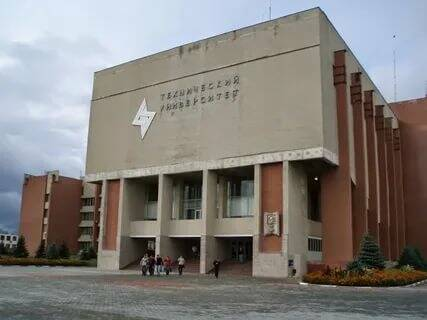
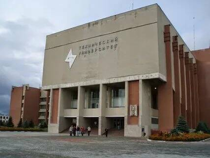
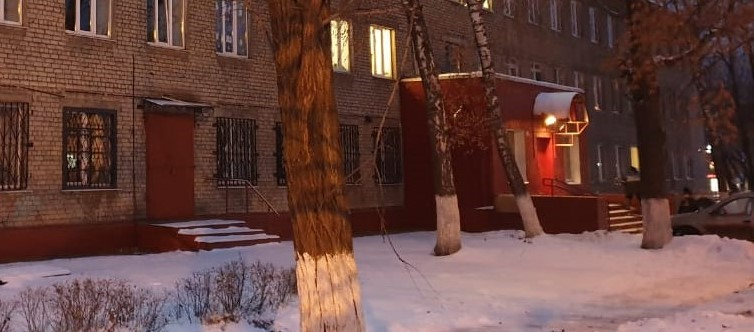
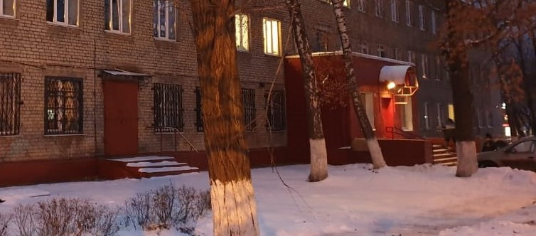
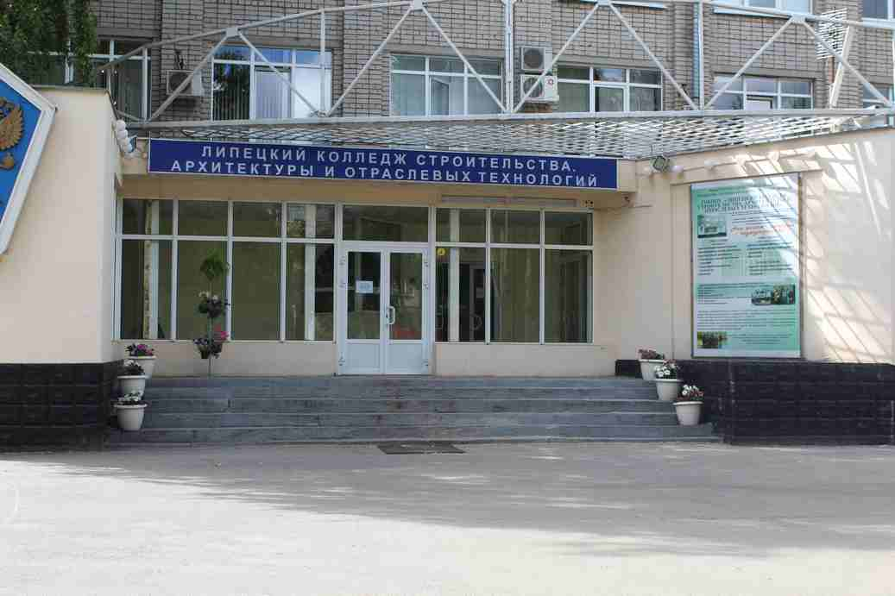

Учеба
Липецк учеба
C трепетом вступил я в августе 2015 года впервые в стены института, чтобы узнать в порядке ли мои документы и смогу ли учавствовать в конкурсе. Документы оказались в порядке и я смог поступить в "Липецкий государственный технический университет"
 
на факультет автоматизации и информатики, кафедру
электрооборудования.

на факультет автоматизации и информатики, кафедру
электрооборудования.
Всему начатому надлежит быть оконченным.
школа
Так сложились жизненные обстоятельства, что я пошел учиться. Первым учебным заведением, после долгого перерыва стало
Вечерняя школа 2
города Липецка.  
Здесь я смог получить общее среднее образование и успешно сдать ЕГЭ.
Одновременно учился в «Липецком индустриально-строительном колледже»

Здесь я смог получить общее среднее образование и успешно сдать ЕГЭ.
Одновременно учился в «Липецком индустриально-строительном колледже»  .
Также хочу поблагодарить Центр занятости населения Липецка.
Всем большое спасибо кто помогал и поддерживал в это время. Также хочется отметить кто мешал все это время. Все получилось не смотря ни на что.
.
Также хочу поблагодарить Центр занятости населения Липецка.
Всем большое спасибо кто помогал и поддерживал в это время. Также хочется отметить кто мешал все это время. Все получилось не смотря ни на что.
ЛСТ
Липецкий строительный техникум в это время был по существу, небольшим институтом. Под стать были и педагоги.

 Читай, работай, учись!
Читай, работай, учись!